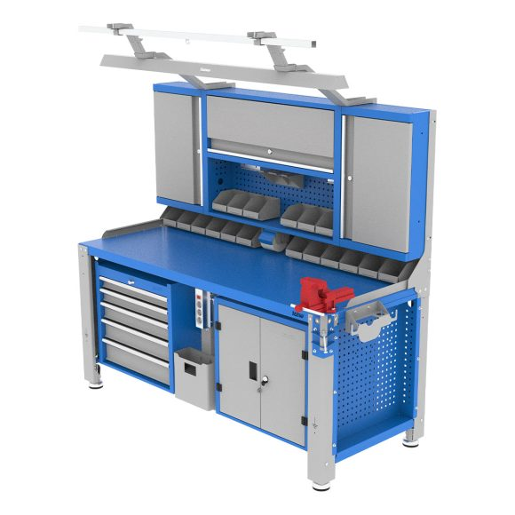
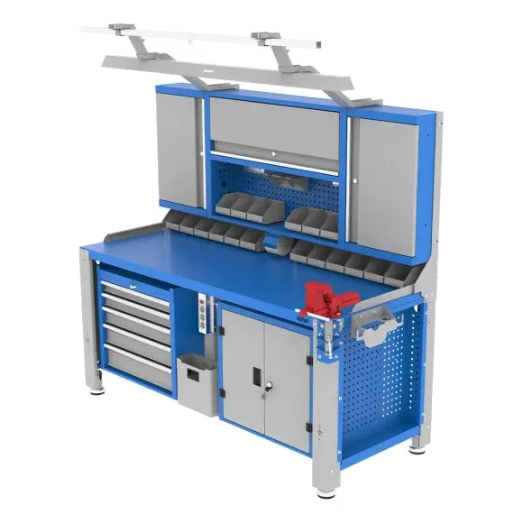
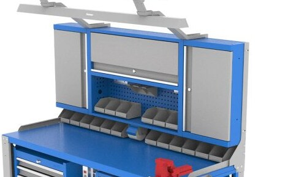
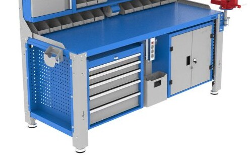
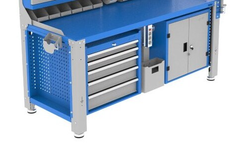
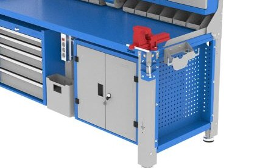
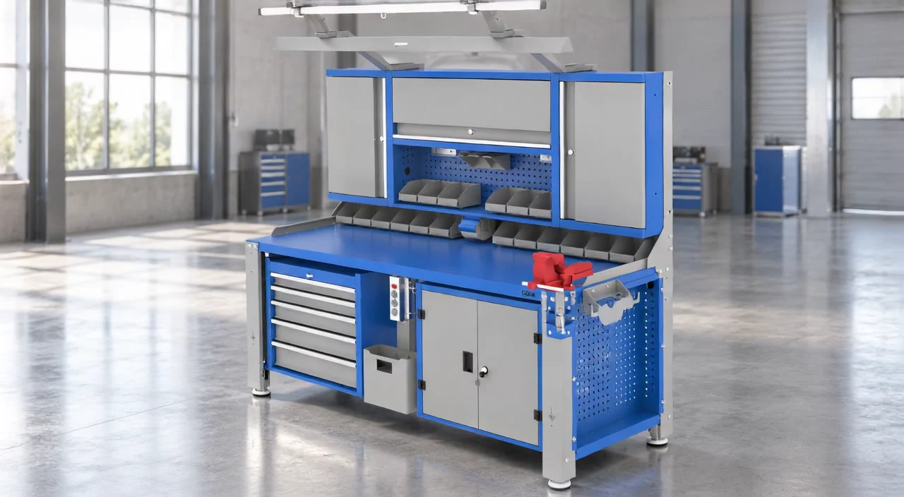

طراحی برای محیط صنعتی
راهحلهایی که از واقعیت کار شروع میشوند، نه از تزئینات.
تجهیزات حرفهای فضای کار
میز کار صنعتی WBG905؛ ترکیبی از استحکام، نظم و کارایی برای محیطهای حرفهای. طراحی شده تا ابزارها همیشه در دسترس باشند و تمرکز شما روی کار باقی بماند.

ما در شاهرخ، با تمرکز بر طراحی و تولید سیستمهای کارگاهی، به دنبال ایجاد محیطهایی کاری منظم، کارآمدتر و حرفهایتر هستیم. محصولاتی که در دل محیطهای واقعی صنعتی متولد شدهاند و برای استفاده طولانیمدت و حرفهای ساخته میشوند.
بیشتر درباره شاهرخWBG905 ترکیبی از استحکام، نظم و کارایی است که برای پاسخ به نیازهای محیطهای صنعتی طراحی شده است. این سیستم با ساختار ماژولار و امکان شخصیسازی، به شما اجازه میدهد فضای کاری ایدهآل خود را بسازید.

ویژگیهای کلیدی
WBG905 با تمرکز بر دوام، نظم و قابلیت توسعه طراحی شده تا برای محیطهای کاری حرفهای عملکرد مناسبی ارائه دهد.
نظم بیشتر، دسترسی سریعتر

مناسب برای محیطهای صنعتی

ظرفیت بالا و دسترسی آسان

نگهداری منظم ابزارها و تجهیزات

ساخته شده برای کاربران حرفهای

۰۴ / محصولات
محصولات شاهرخ با تمرکز بر کیفیت، دوام و کارایی، برای محیطهای صنعتی و حرفهای طراحی شدهاند. هر محصول پاسخی دقیق به نیازهای واقعی فضای کار است.
مشاهده همه محصولاتدستهبندی محصولات
محصولات شاهرخ در دستهبندیهای متنوع، پاسخگوی نیازهای مختلف محیطهای کاری هستند.
۰۵ / در حرکت
حرکت درست بین ابزار و وظیفه، از فضایی شروع میشود که برای کار طراحی شده باشد.
جایگاه ویدئوی دوم
۰۶ / توانمندیها
راهحلهایی که از واقعیت کار شروع میشوند، نه از تزئینات.
چیدمانی روشن برای کاهش اصطکاک در مسیر کارهای روزانه.
پایهای منعطف برای نیازهایی که در طول زمان تغییر میکنند.
ترکیب عملکرد، تناسب و کیفیت در یک زبان بصری منسجم.
جایگاه ویدئوی سوم
۰۷ / جزئیات
وقتی محیط درست حل شده باشد، کار میتواند در مرکز توجه بماند.
۰۸ / شاهرخ
یک تجربهی حرفهای از برندی که با زبان محصولش صحبت میکند.
۰۹ / قدم بعدی
برای شناخت محصولات و راهحلهای شاهرخ با ما در تماس باشید.
تماس با شاهرخ